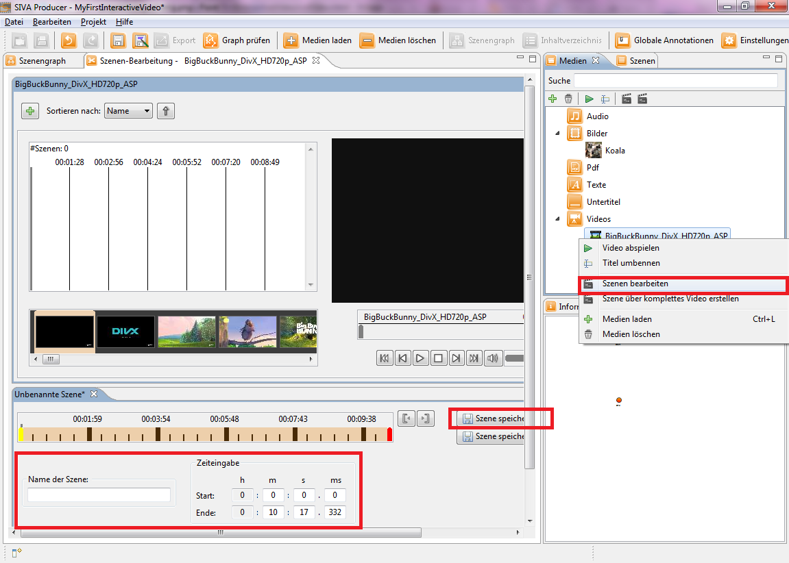

Sie haben sich also dafür entschieden nicht das gesamte Video als Szene in Ihr interaktives Video einzufügen, sondern nur einen
Abschnitt. Dafür klicken Sie mit der rechten Maustaste auf ihr Video im Medien-Repository, sodass sich das Kontextmenü öffnet. Anschließend klicken Sie
auf "Szenen bearbeiten", um den Szeneneditor zu öffnen.

Im Szeneneditor können Sie nun den gelben Anfangsbalken und den roten Endbalken innerhalb der Zeitleiste verschieben, um Ihr Video zuzuschneiden oder Sie begrenzen die Szene indem Sie den Start- und Endzeitpunkt im Bereich "Zeiteingabe" eingeben.
Des Weiteren haben Sie die Möglichkeit im unteren Bereich den Titel der Szene zu wählen oder Schlüsselwörter für die Erleichterung der Suche zu vergeben.
Abschließend klicken Sie auf einen der "Speichern"-Buttons, um das Schneiden abzuschließen und die Szene im Szenenrepository zu speichern.